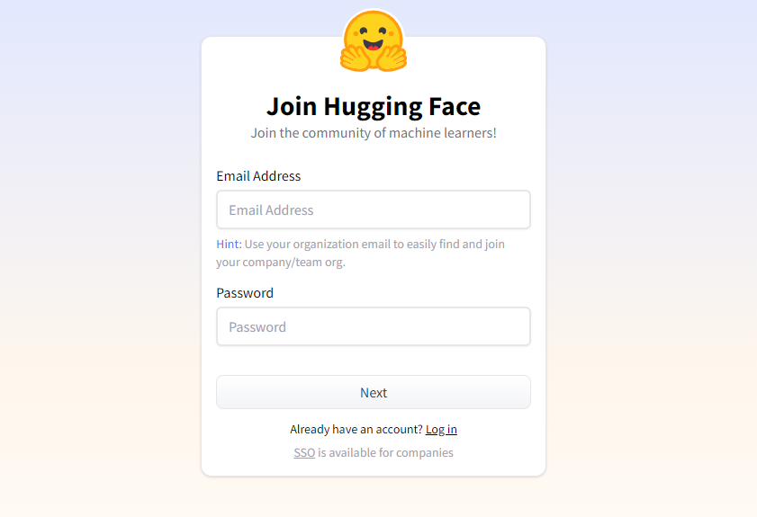
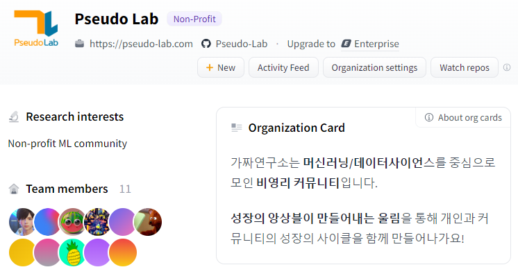
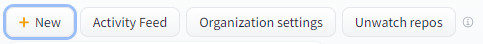
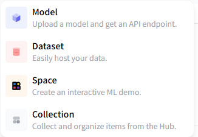
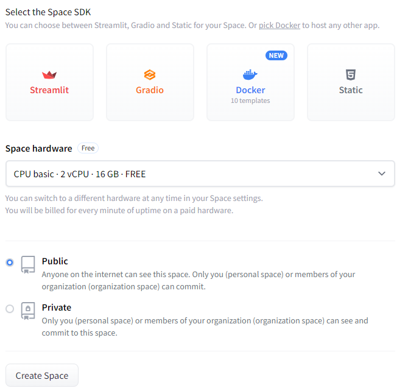
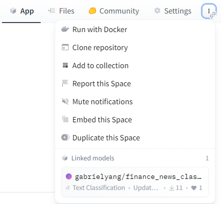
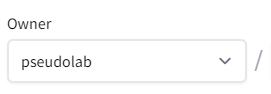

02_프로젝트 생성
이제 본격적으로 해커톤 여정을 시작해봅시다! 이번 해커톤에서는 각자의 뛰어난 아이디어와 프로젝트를 Hugging Face KREW Hackathon 2023 컬렉션에 등록하여 전 세계 사람들과 공유하는 기회를 갖게 됩니다.
"Hugging Face KREW Hackathon 2023" (collection)
├── 참가자프로젝트(1) (space)
├── ...
├── 참가자프로젝트(n-1) (model)
└── 참가자프로젝트(n) (dataset)Hugging Face 가입
시작하기 전에, hf.co/join 링크를 통해 Hugging Face에 가입하시고, 전 세계적인 커뮤니티의 일원이 되어 주세요. 간단한 회원 가입 과정을 거치면 됩니다.

Pseudo Lab 기여자 등록
회원 가입을 마친 후, 기여자 등록 페이지로 이동하여 ’Pseudo Lab’의 프로젝트에 기여할 수 있는 권한을 얻으세요. 여러분의 아이디어가 빛을 발할 수 있는 공간을 제공합니다.

바로 프로젝트 생성해보기
Pseudo Lab 조직 내에서 New 버튼을 눌러 새로운 Space를 시험삼아 만들어보세요. 여기서 Space name은 여러분의 프로젝트를 대표할 이름을 사용해 주세요. 라이선스 선택 부분에서는 “Apache 2.0 License”를 추천합니다.


프로젝트를 실제로 작동시킬 설정도 중요합니다. SDK 옵션에서는 특히 초보자분들께 Gradio를 추천드려요. 사용하기 쉽고, 다양한 예제를 통해 빠르게 배울 수 있습니다. 그리고 하드웨어는 기본적으로 제공되는 무료 CPU 자원을 사용하되, 필요에 따라 추가적인 GPU 자원을 요청할 수도 있어요. 하지만, 모든 참가자가 자원을 공유해야 하니 꼭 필요한 경우에만 요청해 주세요!

- 고급 GPU 하드웨어 자원을 사용하면 해커톤 전체 Credit이 소모됩니다.
- 다른 참가자를 배려한 효율적인 사용 부탁드립니다.
기존 프로젝트 가져오기
개인 스페이스에서 프로젝트를 먼저 시작한 경우에도 걱정하지 마세요. 스페이스를 복제한 후, 소유권을 pseudolab으로 변경하면 동일한 방법으로 컬렉션에 추가할 수 있습니다.
 
README 파일 업데이트
README 파일에 자신의 프로젝트를 소개하는 내용을 업데이트 해주세요. 다른 참가자들이 당신의 프로젝트를 더욱 더 흥미롭게 즐길 수 있습니다.
마지막으로 pinned 항목을 false로 설정해주세요. 참가자들 모두에게 필요한 내용을 전달하기 위해서 사용이 제한됩니다. 참가자들의 도움 부탁드립니다.
README.md
title: 'My Project'
emoji: 🌌
colorFrom: purple
colorTo: yellow
sdk: gradio
sdk_version: 3.36.1
app_file: app.py
pinned: false